Caring for Columbia since 1975
Gentle, expert care for every stage of their life
A full-service companion animal hospital on Highway 98 East — looking after the dogs and cats of Columbia, Foxworth and the surrounding communities for five decades.

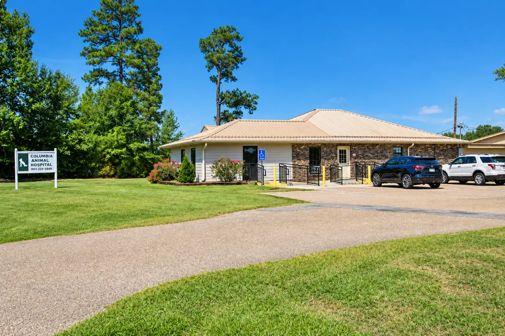
About the hospital
Fifty years on Highway 98 East
Columbia Animal Hospital was established in 1975. In the decades since, the hospital has undergone significant changes to better serve clients and their pets — new equipment, new doctors, and a steadily narrowing focus.
The largest of those changes came in 2005, when we became a small animal clinic exclusively, so that our training, our equipment and our attention could go entirely to dogs and cats.
Veterinary services
Everything your pet needs, under one roof
From a first puppy visit through surgery, dental work and diagnostic imaging — with grooming and boarding in the same building, so the people handling your pet already know them.
Surgery
A state-of-the-art surgical suite, pre-surgical blood work, and vital signs monitored from anesthesia through recovery.
Learn moreDental care
Cleanings from as young as one year old. Tartar bacteria can reach the heart, liver and kidneys.
Learn moreDigital radiography
Clear x-ray images in seconds, and a veterinary radiologist's second opinion when a case calls for it.
Learn moreHeartworm testing
Heartworms are especially prevalent in south Mississippi. Results are often ready while you wait.
Learn moreDermatology
Skin scrapings, ear and skin cytologies, and medicated baths for itching and infection.
Learn moreReproductive services
Support through every phase, from artificial insemination through to the birthing process.
Learn moreGrooming
Trimming, cleaning and medicated bathing by experienced groomers. They book up quickly.
Learn moreBoarding
Climate-controlled and supervised by our veterinarians, with cats housed away from the dogs.
Learn moreMicrochipping
Permanent identification carrying a code unique to your pet, readable at most clinics and shelters.
Learn moreWhy Columbia Animal Hospital
The hospital your neighbors have trusted for decades
Long enough that we are treating the pets of people we first met as children — and equipped well enough that most of what your pet needs happens in this building.
- Experienced local veterinarians All three of our doctors are graduates of the Mississippi State University College of Veterinary Medicine, and between them they have spent most of their careers in Columbia.
- Modern diagnostics on site Digital radiography produces images in seconds and can be sent to a veterinary radiologist for a second opinion. Heartworm results are often ready while you wait.
- Dogs and cats, exclusively We narrowed our focus to companion animals in 2005 so our training and our equipment go entirely to the pets who live in your house.
- Care for the whole life of the pet First vaccinations, spay and neuter, dental work, the difficult later years — the same team, and records that go back as far as your family does with us.
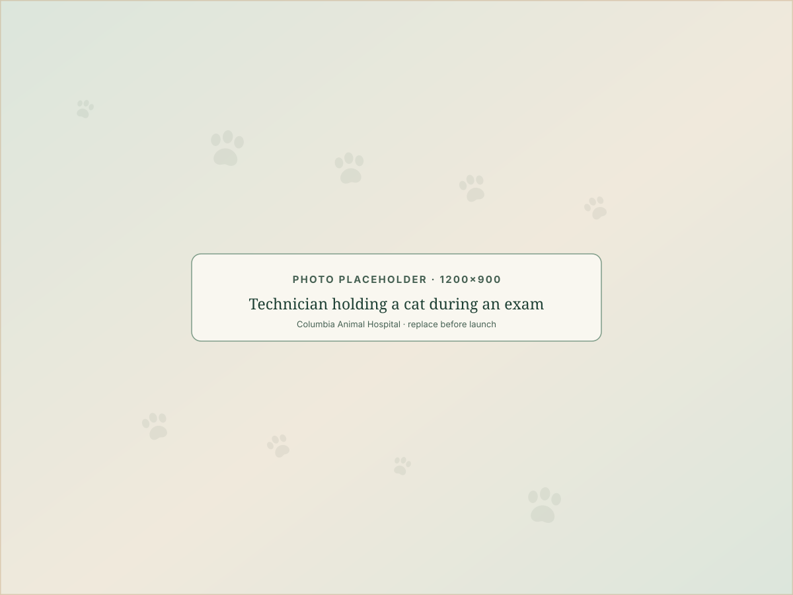
Meet the team
The veterinarians who will see your pet
Three doctors, all trained at Mississippi State, with a combined history in Columbia measured in decades rather than years.
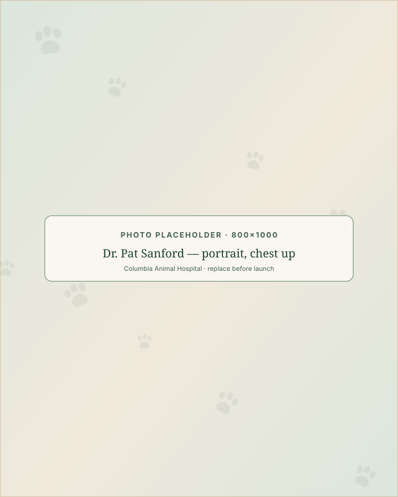
With us since 1985Dr. Pat Sanford
Doctor of Veterinary MedicineA 1985 graduate of the Mississippi State University College of Veterinary Medicine, who joined the hospital the same year he qualified.
Read full profile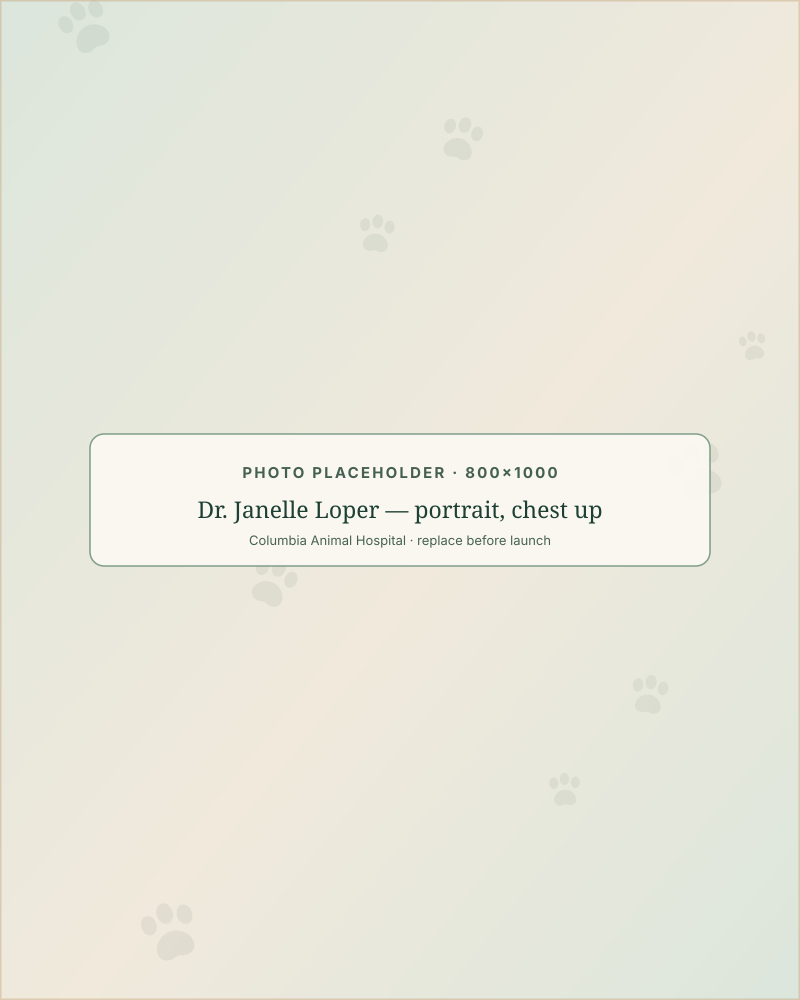
With us since 2008Dr. Janelle Loper
Doctor of Veterinary MedicineA 2002 graduate of the Mississippi State University College of Veterinary Medicine, treating our clients' pets since 2008.
Read full profile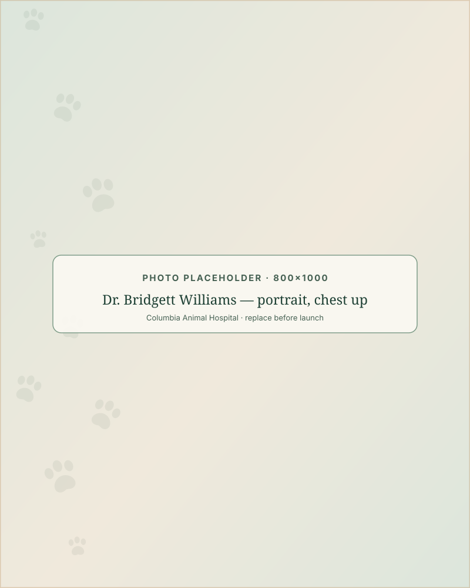
With us since 2013Dr. Bridgett Williams
Doctor of Veterinary MedicineA 2010 graduate of the Mississippi State University College of Veterinary Medicine, who joined us in 2013 after practicing in Bay Springs.
Read full profile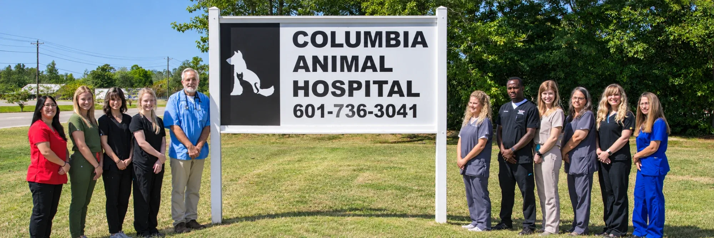
In our clients' words
What people say about us
To provide professional, compassionate veterinary care to clients and their furry family members.Our mission, and the standard we ask to be judged against
Our clients leave reviews on our Facebook page, where you can read them in full and in their own words rather than as selected quotes.

New patients
What happens on your first visit
New to the hospital? Here is how a first appointment usually goes, so nothing about it is a surprise.
Call to book
Appointments are made by phone on (601) 736-3041. Tell us what is going on and roughly how old your pet is.
Bring what you have
Any vaccination records from a previous veterinarian, and the packaging of any medication or food your pet is on.
The examination
A full physical exam, a conversation about what you have been seeing at home, and any testing the doctor recommends.
A plan you understand
What we found, what we suggest, and what it involves — explained before anything is decided.
After-hours care
If something happens outside our hours
Columbia Animal Hospital has an on-call veterinarian available after hours in the case of an emergency. If your pet needs help when the hospital is closed, call us and follow the instructions you are given.
We are not a 24-hour emergency hospital. Our building is staffed during the posted hours below. After hours an on-call veterinarian is available for emergencies — please call first rather than driving over, as nobody may be at the hospital to meet you.
One number, any hour
(601) 736-3041Columbia Animal Hospital · 1409 Hwy 98E, Columbia, MS 39429
Call the hospitalInside the hospital
Where your pet will be cared for
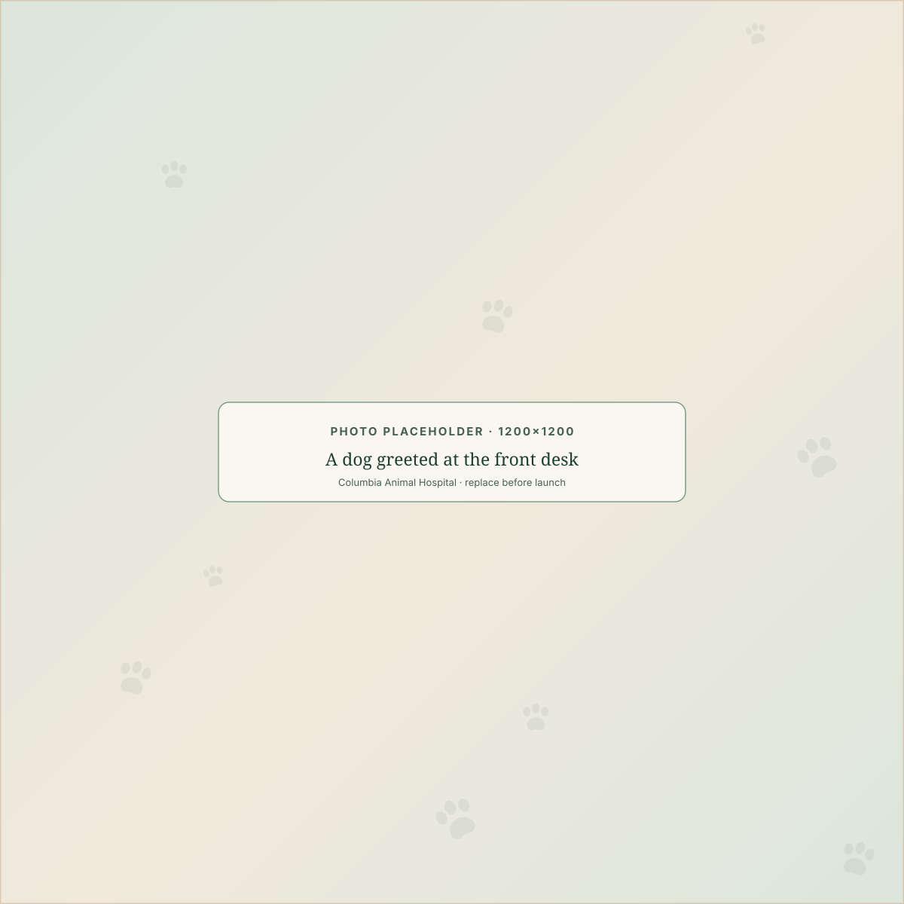
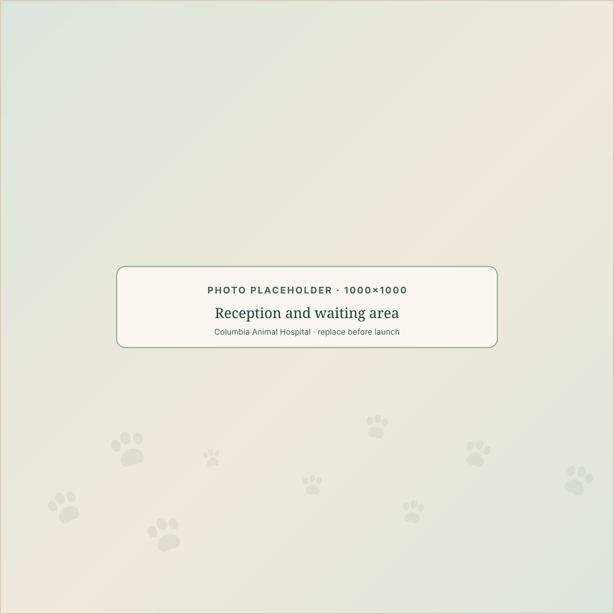
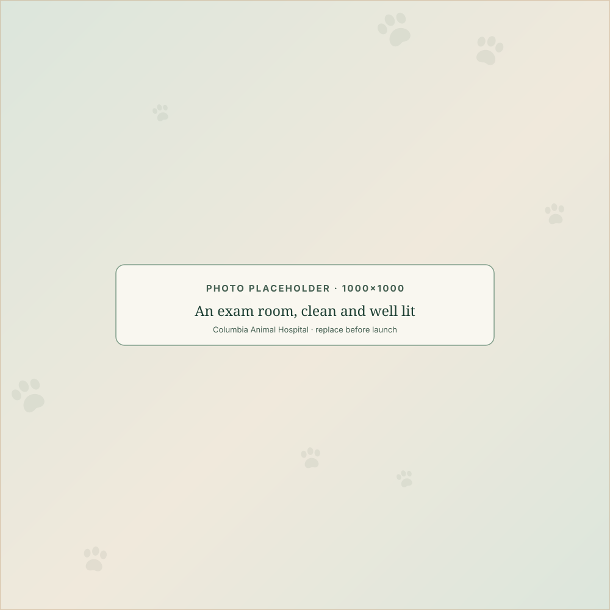
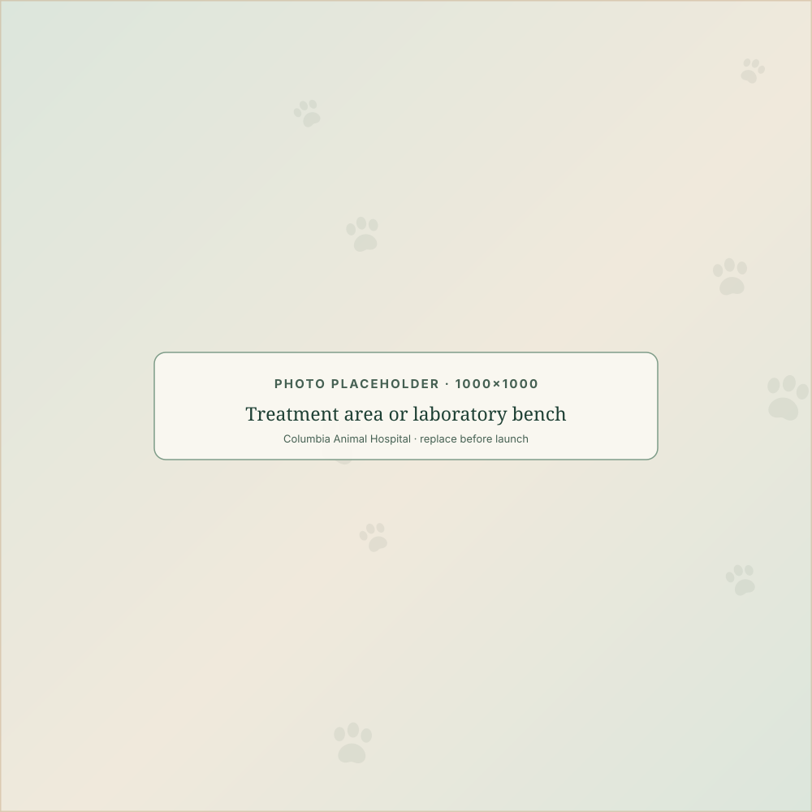
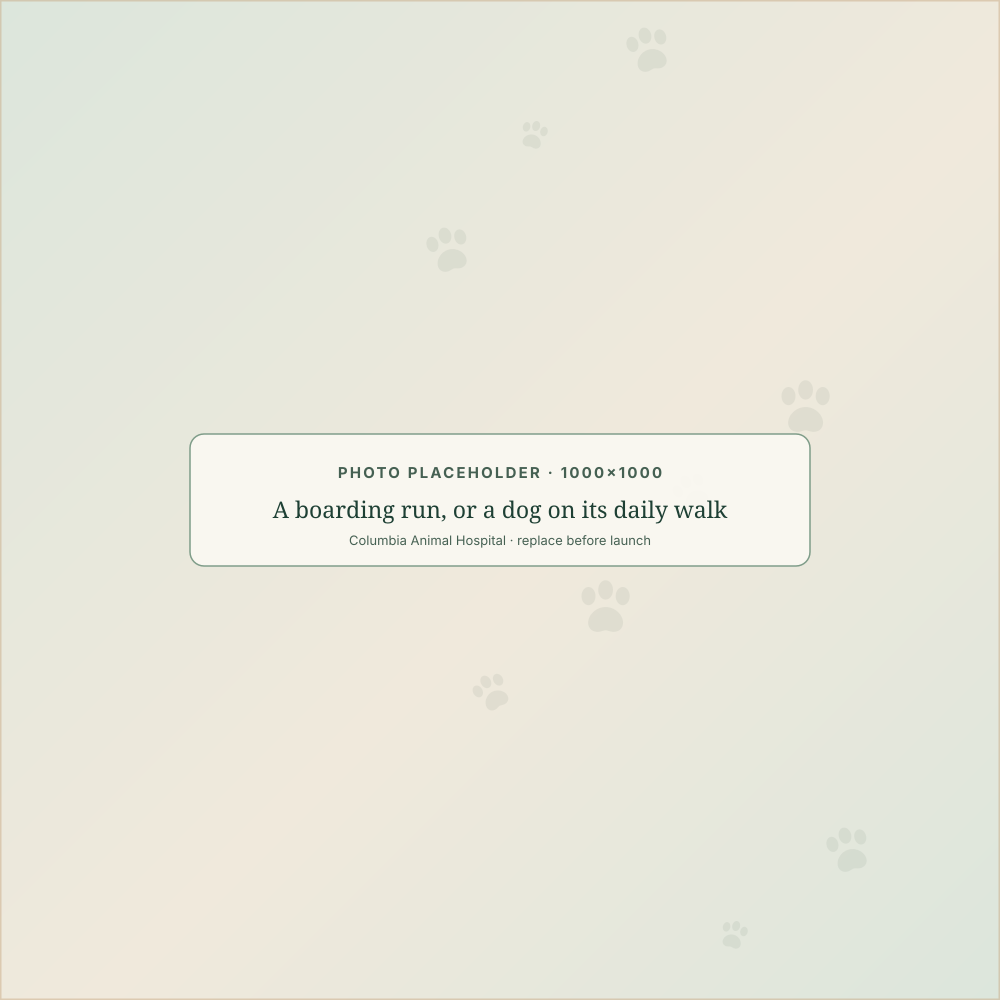
Hours & location
On Highway 98 East, minutes from downtown Columbia
Opening hours
Hours- Monday – Friday 7:30 AM – 5:30 PM
- Saturday 8:00 AM – 12:00 PM
- Sunday Closed
All times are US Central. An on-call veterinarian is available after hours in the case of an emergency — how after-hours care works.
-
Address
1409 Hwy 98E
Columbia, MS 39429 Get directions -
Phone
(601) 736-3041 Appointments, grooming, boarding and questions
1409 Hwy 98E, Columbia, MS 39429
Questions we hear often
Good to know before you come in
How often should my pet see a veterinarian?
We recommend that a healthy pet visit the clinic at least once each year — to properly boost vaccinations, identify any health issues your pet may be experiencing without obvious signs, and monitor their aging process.
When should puppies and kittens be vaccinated?
Puppies and kittens require several booster vaccinations, given three weeks apart, to protect them from viruses common to this area. They are vaccinated at six, nine, twelve and fifteen weeks of age, with annual vaccines recommended one year after the final booster.
At what age should my pet be spayed or neutered?
Columbia Animal Hospital recommends not having your pet sterilized any earlier than six months of age. This allows your pet to mature with their reproductive organs and the corresponding hormones, which allows for a normal aging process.
How do I make an appointment?
By phone. Call (601) 736-3041 during our opening hours — Monday to Friday, 7:30 AM – 5:30 PM, and Saturday, 8:00 AM – 12:00 PM. Tell us what is going on and we will find you a time.
Your pet deserves compassionate, experienced care.
Whether it is a first puppy visit, a limp you cannot explain, or a dental cleaning you have been putting off — call Columbia Animal Hospital and we will find a time.